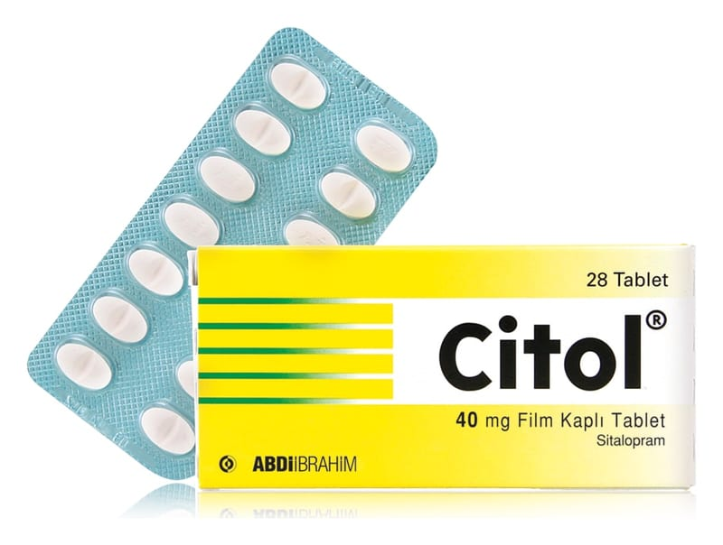

Citol 40 mg Film Kaplı Tablet, 28 Adet

Ne için kullanılır
KT · Bölüm 1CİTOL film kaplı tabletlerin her biri 40 mg sitaloprama eşdeğer 49,96 mg sitalopram hidrobromür içerir.
CİTOL 28 ve 56 film kaplı tabletlik ambalajlarda piyasaya sunulmaktadır.
Beyaz renkli, oval, bir yüzü Aİ logolu, diğer yüzü çentikli film kaplı tabletlerdir. Eşit olarak iki parçaya bölünebilir.
CİTOL, sığır sütünden elde edilen laktoz monohidrat içerir.
CİTOL selektif serotonin geri alım inhibitörüdür (SSRI) ve antidepresanlar olarak bilinen bir ilaç grubuna aittir. Beyindeki serotonin sistemine etki ederek serotonin düzeylerini yükseltirler. Serotonin sistemindeki bozukluklar depresyon ve depresyonla ilişkili hastalıkların gelişmesinde önemli bir faktördür. Bu ilaçlar hastalığınızın belirtilerine neden olan beyindeki bazı kimyasal dengesizlikleri düzeltmeye yardımcı olurlar.
CİTOL depresyon tedavisinde ve kendinizi daha iyi hissettiğinizde bu belirtilerin tekrarlanmasını önlemede yardımcı olmak için kullanılır.
Ayrıca, CİTOL tekrarlayan depresyonu olan hastalarda yeni depresif nöbetlerin oluşumunu önlemek üzere uzun dönem tedavide kullanılır.
CİTOL, panik atak eğilimi olan hastalarda ve obsesif kompulsif (saplantı-zorlantı) bozukluğu (OKB) olan hastalarda belirtilerin hafifletilmesinde yararlıdır.
Doktorunuz CİTOL'ü başka bir amaçla da reçetelendirmiş olabilir. CİTOL'ün size neden reçetelendirildiğine dair herhangi bir sorunuz var ise doktorunuza sorunuz.